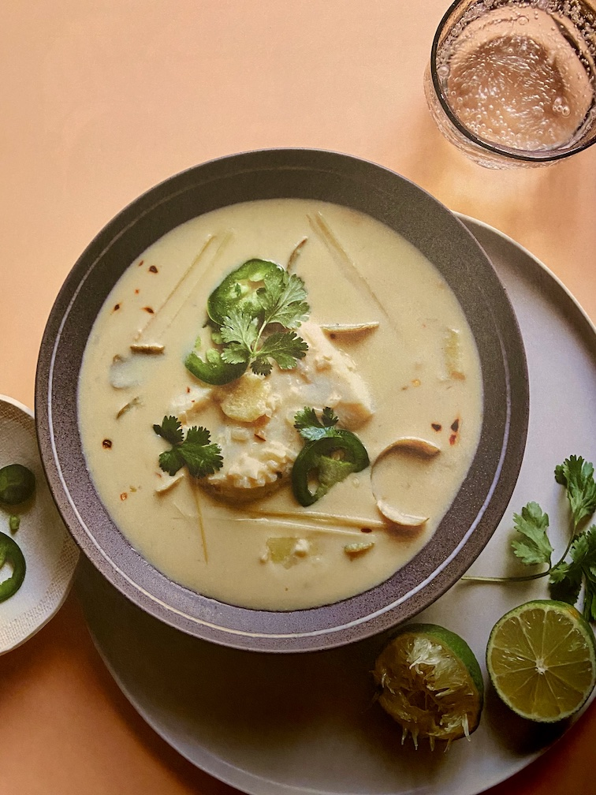

Ginger Cod in Lemongrass Coconut Broth

Description
Poaching infuses mild, flaky cod with the fresh flavors of lemongrass,
lime, and ginger. Crushed red pepper flakes and
jalapeño provide a kick, which you can adjust to
suit your taste.
Ingredients
- 2 tablespoons Thrive Market Organic Virgin Coconut Oil
- 1 large shallot, minced
- 3 garlic cloves, roughly chopped
- 1/2 teaspoon Thrive Market Organinc Crushed Red Pepper
- 1 (14.5-ounce) can Thrive Market Organic Coconut Milk
- 1 cup vegetable broth
- 2 (4-inch) stalks lemongrass, halved lengthwise and smashed
- Peels and juice from 2 limes
- 1 (2-inch) piece ginger, peeled and thinly sliced
- 2 teaspoons fish sauce
- 2 sprigs fresh cilantro, plus more for garnish
- 4 (4-ounce) boneless, skinless Thrive Market Wild-Caught
Atlantic Cod fillets
- 1 teaspoon sea salt
- 1/4 teaspoon Thrive Market Organic Ground Pepper
- 1 jalapeño, thinly sliced, for garnish
Steps
- Add coconut oil to a large skillet and warm over medium heat.
When melted, add shallot, garlic, and red pepper flakes;
sauté until shallot is translucent, about
2 to 3 minutes.
- Add coconut milk, vegetable broth, lemongrass. lime peels,
ginger, fish sauce, and cilantro. Simmer, whisking occasionally,
for 2 minutes.
- Lightly place the fish into the sauce and bring sauce back to
a simmer, then cover the pan and reduce heat to low. Cook about
5 to 6 minutes, or until cod is cooked through and flaky.
- Transfer fish to a shallow bowl. Whisk lime juice, salt, and
pepper int the sauce, then ladle it over the fish. Garnish with
cilantro and jalapeño.
Home